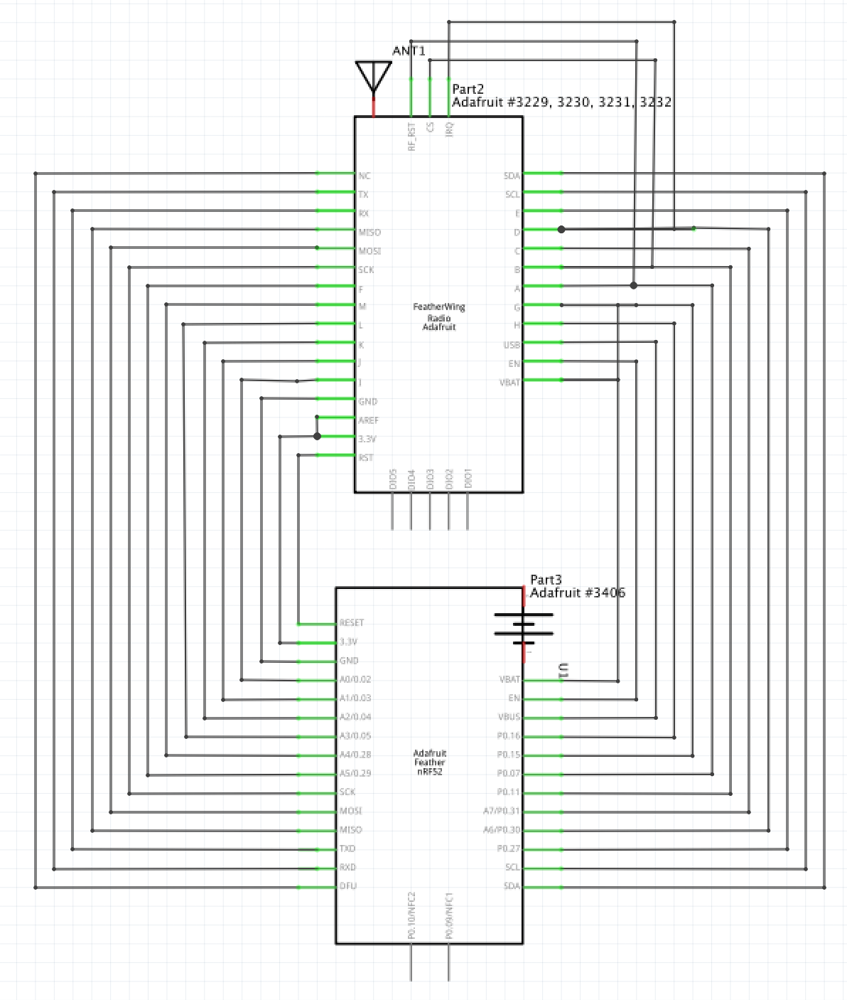
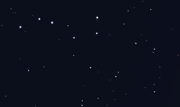
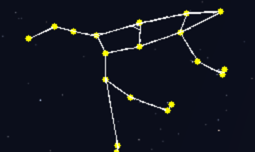

Dalhousie Space Systems (DSS) Labs is a group of students and professors creating the first satellite built in Nova Scotia as part of the Canadian Space Agency's CubeSat initiative.
I am working with the core software team writing C++ code that will perform mission critical functionality during flight
More information about the project can be found at the DSS Labs website
The code can be viewed at the github repo
Due to the vastness of Canada’s wilderness, it is infeasible to provide cellular service throughout the entire country. However it is often in these places that cellular service and the need for reliable communication is highest. As a solution to this problem, the Chirp Nets device is being created. This device is a mesh networking device that will allow users with the device to communicate with each other in areas without cellular service.
The Chirp Nets device will include several subsystems that must work together for it to be successful. These subsystems include the physical hardware, the firmware that manages the interactions and communications, the routing algorithm that manages how the messages are sent and the mobile application that the user interacts with to communicate through the device. To be a successful project the device must be able to communicate over a mesh network of at least three nodes and containing one ‘hop’ meaning the message is not sent directly to the destination but is passed by a middle device.
My role with Chirp Nets is the design and assembly of the hardware and the low level radio management code within the firmware. The firmware code is open source and available at the github repo
The following key components were used:
1x Microcontroller + Bluetooth Transceiver + Power Controller
(Adafruit Feather NRF52 BlueFruit)
1x RF Transceiver (Adafruit FeatherWing RFM69HCW 900Mhz)
1x Battery (Lithium Ion Polymer 3.7v 400mAh)
1x Antenna (915Mhz Simple String Antenna)
Circuit Schematic:
Assembled Device:

More information about the project can be found on the github organization
WatchfulSky is an Android application written in Java that allows users to track satellites in real time and view the current arrangement of the planets. Satellite information is collected in the form of NORAD two-line element data from Celestrak. Orbital calculation are then completed using Orekit.
 |
 |
 |
From the main screen the user can navigate to the satellite tracking or planet tracking functionality.
When the satellite tracking option is selected a list of satellites will appear allowing the user to pick any of the NORAD registered satellites for tracking. Once a satellite is selected its current position is plotted on google maps along with its former and future paths. From the maps screen the user can view information about the satellite, add the satellite to the favorites list, or use the time picker. The time picker allows the user to see where a satellite will be at a user designated time by adding a new marker.
When the plant alignment option is selected a movable view of the solar system is displayed allowing the user to explore the current layout of the planets and read information about each planets movement.
The app can be downloaded from google play
The code can be viewed at the github repo
StarGazer is an python application that can be used in astrophotography to identify constellations
Photos are passed into the program which finds and highlights visible constellations
By feeding in a photograph of the Ursa Major constellation, StarGazer can examine the star layout, and brightness to identify Ursa Major
After the photo is processed a result image will be created with the constellations drawn on top of the original input
The code can be viewed at the github repo
RubyChain is simple blockchain implementation written in Ruby with Sinatra using HTTP requests
It was created to better understand blockchain technologies and demonstrate my proficiency in Ruby
The code can be viewed at the github repo
The Folklore Alexa skill is a dungeon crawling role-playing game, the player dictates their actions to Alexa, while Alexa describes rooms and enemies to the player. The player is able to battle enemies, talk to characters, and travel through the various settings.
The skill was written in Python and is hosted on Amazon Web Services.
Folklore can be downloaded from the Amazon Canada Alexa Skill Store
The code can be viewed at the github repo
The piGRRL Zero is a handheld gaming device running RetroPie originally designed by Adafruit. The project consisted of soldering the components together, installing the RetroPie OS, and 3D printing the buttons and enclosure.
The system has a USB port for adding video game ROM’s, a micro USB port for charging, and a toggle switch for power.
Parts:
1x Adafruit PiTFT 2.2"
1x Raspberry Pi Zero
1x PowerBoost 1000C
1x 2000mAh Battery
10x 6mm Tactile Buttons
1x Slide Switch
1x USB Mini Wifi Adapter
1x Tiny OTG Adapter - USB Micro to USB
2x PiGRRL Zero Gamepad PCBs
1x 2x20-pin Strip Dual Male Header
Final Result: